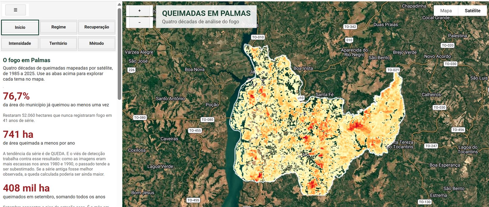

Fique por dentro dos eventos, comunicados e novidades da AMBTO
Ferramenta gratuita e de acesso público reúne 41 anos de mapeamento de áreas queimadas no município de Palmas (TO), de 1985 a 2025. O Webgis foi desenvolvido pelo presidente da AMBTO, o engenheiro ambiental Tiago Araújo Sodré, como iniciativa própria e contribuição técnica voluntária à gestão ambiental do município.
Construído na plataforma Google Earth Engine, o aplicativo consolida quatro décadas de imagens de satélite para mostrar onde, quando, com que frequência e com que intensidade o fogo ocorreu em Palmas — e como a vegetação responde depois de cada queimada. A ferramenta está disponível gratuitamente para consulta de gestores públicos, órgãos ambientais, técnicos e para a população em geral, servindo como base de dados aberta e verificável para planejamento, prevenção e fiscalização.
O aplicativo organiza a análise em quatro módulos, que juntos permitem uma leitura mais completa do que apenas "quanto queimou":
Frequência de queimadas por pixel, classes de recorrência (de rara a crônica), intervalo médio entre incêndios e se cada área passou a queimar mais ou menos ao longo do tempo.
Mede, pelo índice NDVI, o quanto a vegetação recupera o vigor um ano após o fogo — e separa vegetação nativa de áreas de uso antrópico, como pastagem e lavoura.
Classifica a severidade relativa das queimadas com o índice dMIRBI, escolhido após testes comparativos por ter melhor desempenho que o dNBR nas condições do Cerrado.
Compara o histórico de fogo entre unidades de conservação, perímetro urbano e distritos de Palmas, como a APA Serra do Lajeado e o Parque Estadual do Lajeado.

O levantamento traz números que ajudam a dimensionar quatro décadas de fogo no município:
A comparação entre territórios também chama atenção: o Parque Estadual do Lajeado queimou três vezes menos que a APA Serra do Lajeado vizinha na última década (13% contra 37% da área atingida) — duas áreas protegidas lado a lado, com regimes de proteção diferentes e resultados bem distintos. Dentro da própria APA, 10.289 hectares de formação florestal já queimaram, sendo 4.703 hectares só nos últimos dez anos.
A tendência de queda na área queimada é lida com cautela pelo próprio aplicativo: como a disponibilidade de imagens de satélite era menor nas décadas de 1980 e 1990, parte do fogo mais antigo pode não ter sido detectada. Esse viés de detecção trabalha contra o resultado encontrado — ou seja, a redução real do fogo em Palmas tende a ser igual ou maior que a medida pelo aplicativo.
Palmas está inserida no bioma Cerrado, onde o fogo é parte da dinâmica natural: formações savânicas e campestres evoluíram com queimadas periódicas e costumam rebrotar depois do fogo. Por isso, o aplicativo adota uma leitura que evita tratar toda área queimada como sinônimo de dano.
O que indica problema, segundo a metodologia do Webgis, é a combinação de fatores: fogo muito frequente no mesmo lugar, fogo em vegetação florestal ou ciliar, fogo de alta severidade, fogo próximo a áreas habitadas e vegetação que não se recupera. É justamente para permitir essa leitura mais qualificada — e não apenas "quanto queimou" — que o aplicativo foi estruturado nos quatro módulos de análise.
O Webgis utiliza dados do MapBiomas Fogo (Coleção 5) e do MapBiomas de uso e cobertura da terra (Coleção 10.1), imagens dos satélites Landsat 8 e 9 (cortesia do United States Geological Survey — USGS), limite municipal do IBGE e recortes territoriais do Plano Diretor de Palmas (Lei Complementar nº 400/2018). Todo o processamento foi realizado na plataforma Google Earth Engine.
Um diferencial do aplicativo é a transparência sobre suas próprias limitações: a aba "Método" detalha, entre outros pontos, a resolução espacial de 30 metros, o viés de detecção em imagens mais antigas, a cobertura parcial da análise de intensidade por causa de nuvens, e o fato de que as classes de intensidade são relativas à distribuição observada em Palmas — não limiares absolutos. Essa documentação aberta das limitações é o que sustenta a credibilidade técnica da análise.
O Webgis de Queimadas em Palmas foi desenvolvido pelo presidente da AMBTO, engenheiro ambiental Tiago Araújo Sodré, como iniciativa própria e contribuição técnica voluntária à gestão ambiental do município. A ferramenta demonstra o potencial da aplicação de geotecnologias a serviço do monitoramento e fiscalização ambiental do Tocantins, colocando à disposição do poder público e da sociedade uma base de dados aberta sobre 41 anos de queimadas em Palmas.
O aplicativo está disponível gratuitamente, sem necessidade de cadastro, e pode ser acessado por qualquer pessoa interessada em consultar o histórico de queimadas do município.